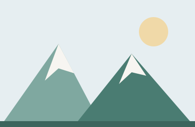

webfejlesztő tanuló · hegyimádó · teafüggő
Sziasztok! Kovács Anna vagyok, 17 éves, és a szegedi Deák Ferenc Gimnázium informatika tagozatára járok. Két éve kezdtem el weboldalakat készíteni, azóta minden szabad hétvégémen valami újat próbálok ki – néha sikerül, néha látványosan nem.
Leginkább az tetszik a webfejlesztésben, hogy amit reggel kitalálok, azt délutánra már meg is lehet mutatni valakinek. A képernyő másik oldalán ott van egy ember, aki használni fogja – ez tart benne.
Ez az oldal az első „névjegyem”, tiszta HTML-ből és CSS-ből.
Amiket eddig megtanultam, és amiket most tanulok:
A kedvenc tanulóoldalam a MDN Web Docs.

Hónaponta legalább egy hegy. A Zempléni-hegység a kedvencem, mert ott még van csend.
Egy 2009-es kompakt géppel fotózok. Rosszabb, mint a telefonom – épp ezért szeretem.
Kis játékokat és weboldalakat írok. A legutóbbi egy kvízoldal volt a suli klímakörének.
Így jutottam el idáig:
„A kód olyan, mint a recept: attól lesz jó, hogy valaki tényleg megeszi, amit főztél.”
Ha kérdésed van, vagy közös projektben gondolkodsz, írj nyugodtan:
Készítette: Kovács Anna · 2026 · Vissza a lap tetejére
Ez egy gyakorlófeladat – a szereplő kitalált.